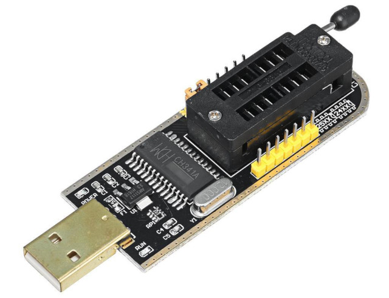
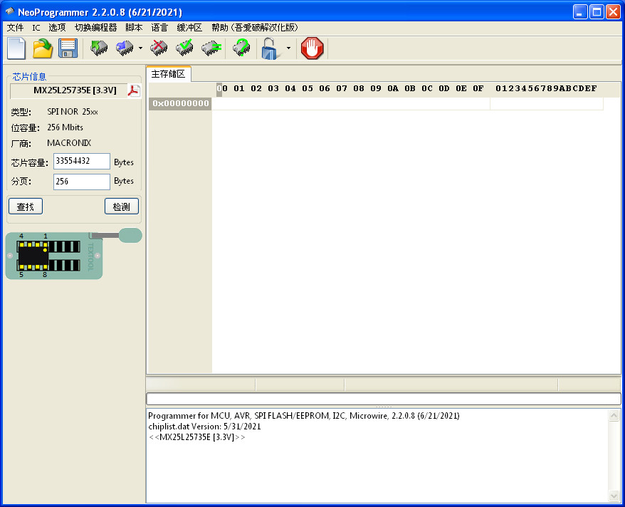
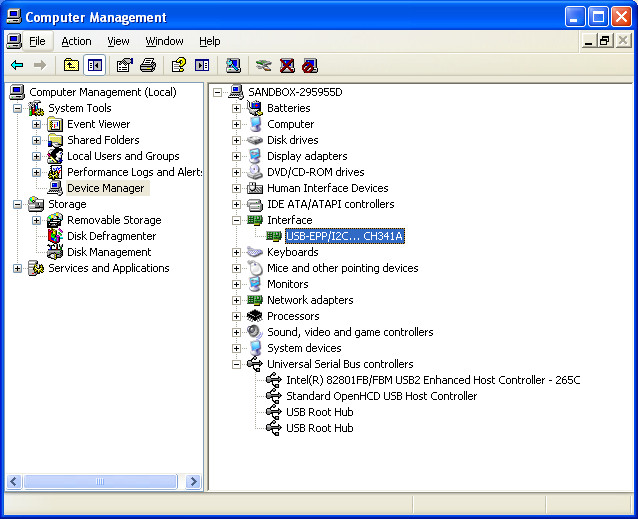

步驟如下：
$ cd
$ wget https://github.com/steward-fu/website/releases/download/mt7688/buildroot-gcc342.tar.bz2
$ tar xvf buildroot-gcc342.tar.bz2
$ sudo mv buildroot-gcc342 /opt
$ export PATH=$PATH:/opt/buildroot-gcc342/bin/
$ mipsel-linux-gcc --version
mipsel-linux-gcc (GCC) 3.4.2
Copyright (C) 2004 Free Software Foundation, Inc.
This is free software; see the source for copying conditions. There is NO
warranty; not even for MERCHANTABILITY or FITNESS FOR A PARTICULAR PURPOSE.
燒錄方式則是使用CH341A燒錄器，直接燒錄SPI Flash


